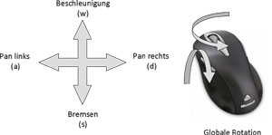

| Computer Graphics TU Braunschweig |
| (a) Player 2 Perspektive |
|  |
| (b) Player 2 Steuerung |
Die Aufgabe des Spielers (Player) ist die Steuerung eines Raumschiffs durch einen Canyon. Für die ursprüngliche Sicht des Spielers wurde eine Kameraeinstellung gewählt, die einer Filmdarstellung ähnelt. Die Kamera ist dabei nicht an den Bewegungen des Raumschiffs gebunden, sondern fliegt auf einem unabhängigen Pfad hinter dem Raumschiff her.
Diese Perspektive vermittelte jedoch nicht den erhofften Spielspaß. Deshalb wurde die Steuerung und Kameraeinstellung neu entwickelt. Die Abbildung (a) veranschaulicht die Kameraperspektive des neu entwickelten Spielers (Player 2).
Für die Neuentwicklung wurden folgende Kriterien festgelegt:
Die Bewegungstransformationen des Raumschiffs beinhalten die Veränderung des horizontalen und vertikalen Winkels bei Bewegungen mit der Maus. Anders als bei der ursprünglichen Entwicklung wird demnach nicht mehr mit der Maus gezielt. Aufgrund der Kameraführung ist dies auch nicht mehr notwendig. Die Waffen feuern in Richtung der Kamera und zielen auf den Mittelpunkt der Perspektive. Dort wurde auch das Fadenkreuz platziert. Zudem ist es möglich Seitwärtsbewegungen durch die Links-/Rechts-Steuerung auszuführen (engl. pan). Das Raumschiff lässt sich durch die Vorwärtssteuerung beschleunigen und durch die Rückwärtssteuerung abbremsen.
Durch diese Entwicklung konnte der Spielspaß deutlich gesteigert werden. Die Abbildung (b) bildet die Steuerung des Spielers ab.
TU Braunschweig
- Fakultät für Mathematik und Informatik
- Computer Graphics - Teamprojekt Canyonshooter
{kind=link}
{kind=link}